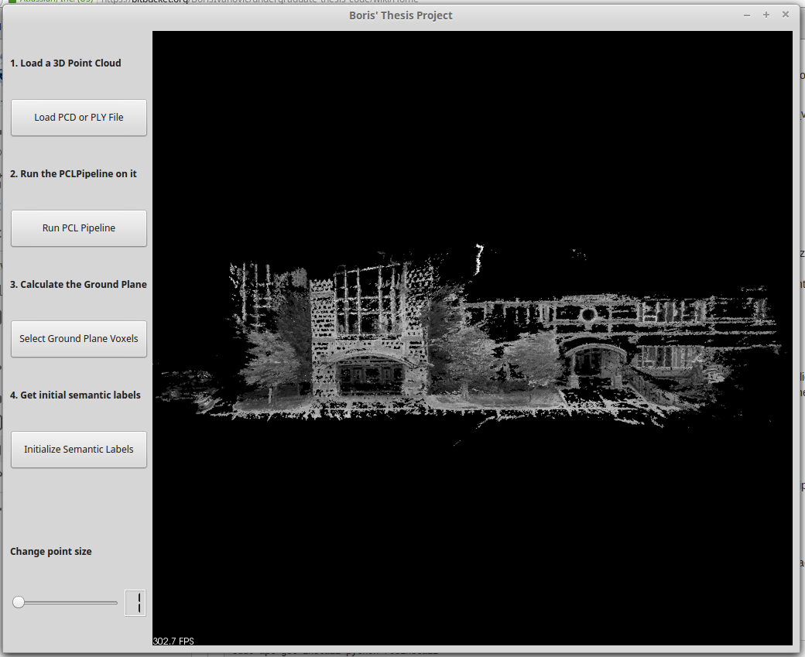

Publications
-
 Pegasus simulator: An isaac sim framework for multiple aerial vehicles simulation
Pegasus simulator: An isaac sim framework for multiple aerial vehicles simulation
Jacinto, Marcelo; Pinto, João; Patrikar, Jay; Keller, John; Cunha, Rita; Scherer, Sebastian; Pascoal, António
International Conference on Unmanned Aircraft Systems (ICUAS) 2024
PDF Code/Website -
Pegasus simulator: An isaac sim framework for multiple aerial vehicles simulation
Jacinto, Marcelo; Pinto, João; Patrikar, Jay; Keller, John; Cunha, Rita; Scherer, Sebastian; Pascoal, António
International Conference on Unmanned Aircraft Systems (ICUAS) 2024
PDF Code/Website

Theses
-
 Trajectory Forecasting in the Modern Robotic Autonomy Stack
Trajectory Forecasting in the Modern Robotic Autonomy Stack
B. Ivanovic
, Ph.D. Thesis. Supervised by Marco Pavone
[PDF] [video] Stanford University, 2021 -
Streamlining the Training of 3D Scene Segmentation Models
B. Ivanovic
, Bachelor Thesis. Supervised by Raquel Urtasun and Sanja Fidler
[PDF] [files] University of Toronto, 2016
Blog Posts
-
Back to the Future: Planning-Aware Trajectory Forecasting for Autonomous Driving
B. Ivanovic
[Post] [SAIL Blog] Stanford AI Lab (SAIL) 2020 -
 How to Deploy Deep Learning Models with AWS Lambda and TensorFlow
How to Deploy Deep Learning Models with AWS Lambda and TensorFlow
B. Ivanovic
, Z. Ivanovic
5th most viewed blog post in all of AWS in 2018
[Post] [AWS Machine Learning Blog] Amazon Web Services (AWS) 2017
Service
Conference Reviewing
- IEEE/CVF Conference on Computer Vision and Pattern Recognition (CVPR): 2021, 2022, 2023
- European Conference on Computer Vision (ECCV): 2022
- International Conference on Learning Representations (ICLR): 2022
- International Conference on Machine Learning (ICML): 2020, 2021, 2022, 2023
- Neural Information Processing Systems (NeurIPS): 2019, 2020, 2021, 2022, 2023
- Learning for Dynamics & Control Conference (L4DC): 2023
- Robotics: Science and Systems (RSS): 2020, 2021
- Conference on Robot Learning (CoRL): 2023
- IEEE International Conference on Robotics and Automation (ICRA): 2020, 2021, 2022, 2023, 2024
- IEEE International Conference on Intelligent Robots and Systems (IROS): 2021, 2022, 2023
- IEEE Conference on Decision and Control (CDC): 2021
- IEEE-RAS International Conference on Humanoid Robots (Humanoids): 2020
- IEEE Intelligent Vehicles Symposium (IV): 2021, 2022
- IEEE Intelligent Transportation Systems Conference (ITSC): 2019
Journal Reviewing
- Nature Machine Intelligence: 2022
- Transactions on Machine Learning Research (TMLR): 2023
- IEEE Robotics and Automation Letters (RA-L): 2020, 2021, 2022, 2023
- IEEE Control Systems Letters (L-CSS): 2021
- IEEE Transactions on Pattern Analysis and Machine Intelligence (TPAMI): 2020, 2022
Fellowship Review Committees
- NVIDIA Graduate Fellowship: 2023, 2024
Workshop Organization
- 6th Workshop on Long-term Human Motion Prediction, ICRA 2024
- 5th Workshop on Long-term Human Motion Prediction, ICRA 2023
- Learning-powered Prediction and Decision-making for Autonomous Driving (LPAD), ITSC 2023